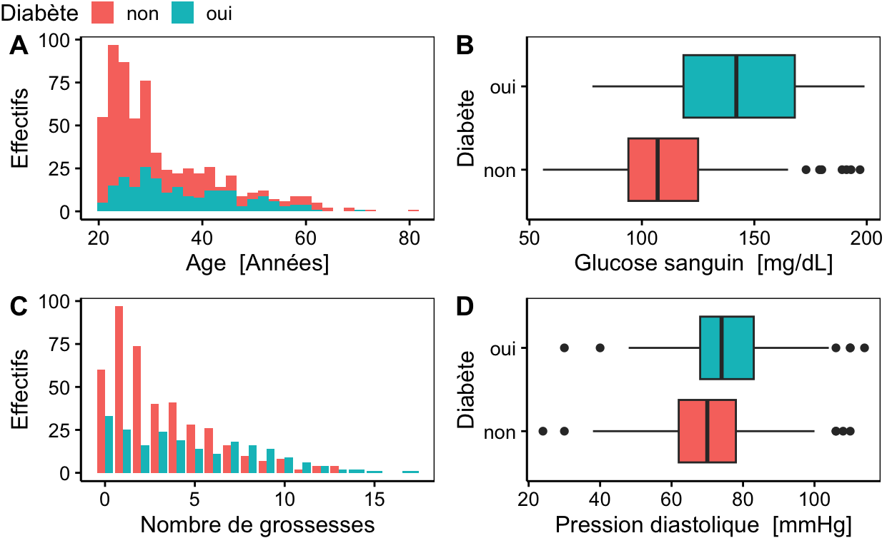
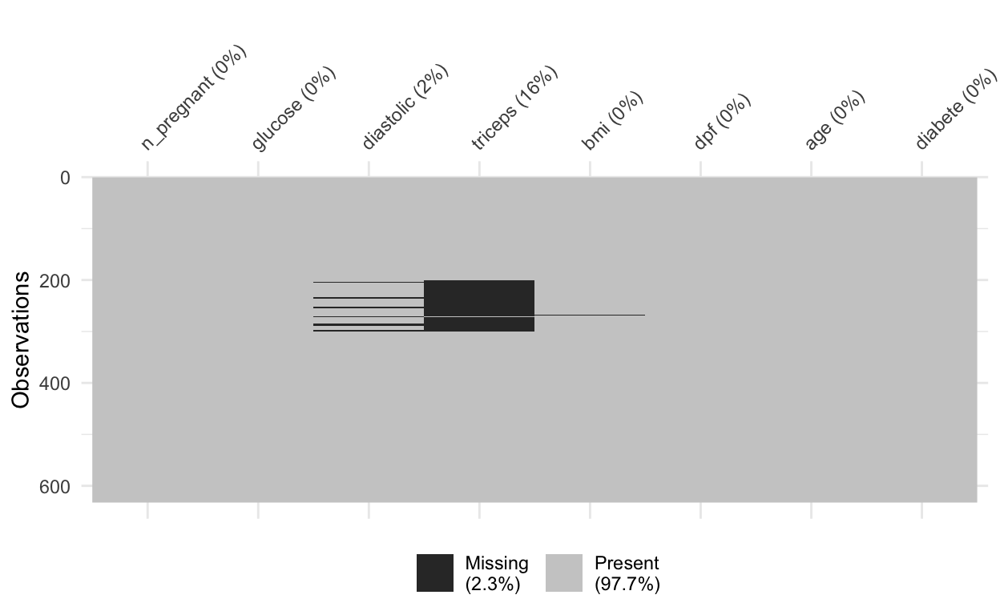

Science des données biologiques II
Réalisé par le service d'Écologie numérique, Université de Mons (Belgique)Objectifs
- Réaliser et interpréter des modèles linéaires généralisés
- Comparer les modèles obtenus et choisir le meilleur
Indiens diabétiques
Les données que vous allez traiter dans ce tutoriel portent sur les cas de diabète chez les descendants des Indiens Pimas en Arizona. La prévalence de diabète de type 2 est particulièrement élevée chez ces Indiens.
Le jeux de données provient du package {MASS}. Deux jeux de données
sont rassemblés Pima.tr2 et Pima.te. Les
variables ont été renommées afin d’être plus explicites. De plus, des
labels et des unités ont été ajoutés.
pima <- bind_rows(
read("Pima.tr2", package = "MASS"), read("Pima.te", package = "MASS"))
# Rename variable
pima <- srename(pima, n_pregnant = npreg, glucose = glu, diastolic = bp,
triceps = skin, dpf = ped, diabete = type)
# Change Yes/No into oui/non for diabete
pima <- smutate(pima,
diabete = factor(ifelse(diabete == "Yes", "oui", "non")))
# Labelise and units
pima <- labelise(
pima,
label = list(
n_pregnant = "Nombre de grossesses",
glucose = "Glucose sanguin",
diastolic = "Pression diastolique",
triceps = "Pli cutané au triceps",
bmi = "Indice de masse corporelle",
dpf = "Risque génétique",
diabete = "Diabète",
age = "Age"
),
units = c(
glucose = "mg/dL",
diastolic = "mmHg",
triceps = "mm",
bmi = "kg/m^2",
age = "Années"
)
)La mesure du glucose dans le plasma sanguin est obtenue à la suite d’un test d’hyperglycémie provoquée. Cet examen est utilisé pour évaluer la capacité du corps à réguler le taux de sucre dans le sang après la prise d’une quantité précise de glucose. Plusieurs prises de sang sont réalisées au début de l’examen, puis après 60 minutes et enfin après 120 minutes. Les valeurs du tableau correspondent à la mesure après 120 minutes.
Le pli cutané au triceps est une mesure de la corpulence. Il est obtenu en mesurant l’épaisseur du pli cutané au niveau du triceps. Plus la valeur est élevée, plus la personne est corpulente. Cette mesure est complémentaire à l’IMC.
Des informations complémentaires sur ces données peuvent être
trouvées via la page d’aide de Pima.te ou
Pima.tr2 (?MASS::Pima.te)
Exploration des données
L’indice du risque génétique lié au diabète (DPF, Diabetes pedigree
function) estime la probabilité d’avoir du diabète en fonction de l’âge
de l’individu et des antécédents familiaux. Débutez votre analyse avec
un histogramme de la variable dpf. Utilisez les facettes
afin de séparer les individus diabétiques, des individus n’ayant pas de
problème de glycémie. Remplacez le label par défaut de l’axe des
ordonnées par “Effectifs”.
chart(___) +
___ +
ylab(___) +
ggtitle("Diabète")chart(data = pima, ___) +
geom_histogram() +
ylab(___) +
ggtitle("Diabète")
#### ATTENTION: Hint suivant = solution !###### Solution ##
chart(data = pima, ~dpf | diabete) +
geom_histogram() +
ylab("Effectifs") +
ggtitle("Diabète")Réalisez à présent un graphique en violon du diabète en fonction de
l’indice de masse corporelle. Les violons doivent être à l’horizontale.
Ce graphique est à réaliser en utilisant chart() et un seul
“geom”.
chart(___) +
___chart(___) +
geom_violin()
#### ATTENTION: Hint suivant = solution !###### Solution ##
chart(data = pima, diabete ~ bmi) +
geom_violin()D’autres graphiques peuvent être réalisés afin d’approfondir encore votre découverte des données.
a <- chart(data = pima, ~age %fill=% diabete) +
geom_histogram() +
ylab("Effectifs")
b <- chart(data = pima, diabete ~ glucose %fill=% diabete) +
geom_boxplot()
c <- chart(data = pima, ~n_pregnant %fill=% diabete) +
geom_bar(position = "dodge") +
ylab("Effectifs")
d <- chart(data = pima, diabete ~ diastolic %fill=% diabete) +
geom_boxplot()
combine_charts(list(a, b, c, d), common.legend = TRUE)`stat_bin()` using `bins = 30`. Pick better value with `binwidth`.
`stat_bin()` using `bins = 30`. Pick better value with `binwidth`.Warning: Removed 13 rows containing non-finite outside the scale range
(`stat_boxplot()`).Warning in leg$height: partial match of 'height' to 'heights'Warning in leg$width: partial match of 'width' to 'widths'
Les personnes saines sont plus nombreuses que les personnes malades. Les individus étudiés ont 21 ans et plus. La proportion de personnes diabétiques augmente avec l’âge et avec le nombre de grossesses (il s’agit ici de femmes uniquement). Le glucose dans le plasma sanguin et la pression diastolique sont plus élevés chez les patients diabétiques, tout comme l’IMC.
visdat::vis_miss(pima)
La présence de valeurs manquantes est de 16% pour la mesure de l’épaisseur du pli cutané au niveau du triceps. Si nous conservons cette variable pour notre modèle, nous perdrons autant de cas. Malgré la plus grande marge d’erreur de l’IMC, nous allons donc utiliser cette variable-là.
Éliminez les lignes du jeu de données contenant des valeurs
manquantes uniquement pour l’IMC (bmi) avec une fonction
“speedy”.
pima1 <- ___pima1 <- sdrop_na(___)
#### ATTENTION: Hint suivant = solution !###### Solution ##
pima1 <- sdrop_na(pima, bmi)Modélisation
L’exploration des données nous a permis de mettre en avant de potentiels bons candidats pour modéliser la présence ou l’absence de diabète tel que l’IMC, l’âge ou encore l’assimilation du glucose lors d’un test d’hyperglycémie provoquée.
Réalisez un modèle complet tenant compte des trois variables
sélectionnées (bmi, age et
glucose dans cet ordre) sur bases des données dans
pima1. Affichez également le résumé du modèle.
# Modèle complet
diab1 <- glm(data = ___, ___, family = ___)
# Résumé du modèle
___# Modèle complet
diab1 <- glm(data = ___, ___, family = binomial)
# Résumé du modèle
summary(___)
#### ATTENTION: Hint suivant = solution !###### Solution ##
# Modèle complet
diab1 <- glm(data = pima1, diabete ~ bmi * age * glucose, family = binomial)
# Résumé du modèle
summary(diab1)Réalisez à présent un nouveau modèle sans interaction en utilisant
les mêmes trois variables (bmi, age et
glucose dans cet ordre) pour prédire la variable
diabete.
diab2 <- glm(data = ___, ___, family = ___)
# Résumé du modèle
___# Modèle complet
diab2 <- glm(data = ___, ___, family = binomial)
# Résumé du modèle
summary(___)
#### ATTENTION: Hint suivant = solution !###### Solution ##
diab2 <- glm(data = pima1, diabete ~ bmi + age + glucose, family = binomial)
summary(diab2)Comparez les modèles à l’aide d’un test de Chi carré et du critère d’Akaike.
anova(___)
___(___)anova(___, ___, test = ___)
AIC(___)
#### ATTENTION: Hint suivant = solution !###### Solution ##
anova(diab1, diab2, test = "Chisq")
AIC(diab1, diab2)Sur base du test de Chi carré, du critère d’Akaike et de vos
interprétations des résumés des deux modèles, décidez quel modèle vous
voulez conserver. Affichez le tableau résumé de ce modèle avec la
fonction tabularise()pour en obtenir un rendu de
qualité.
___(___(___))## Solution ##
tabularise(summary(diab2))Pour aller plus loin
En poursuivant l’analyse de ces données, il est possible d’obtenir un modèle encore meilleur. La stratégie suivante a été de partir d’un modèle complexe et de la simplifier progressivement.
diab3 <- glm(data = pima1,
diabete ~ bmi + n_pregnant + glucose + diastolic + dpf + age ,
family = binomial)
summary(diab3)
Call:
glm(formula = diabete ~ bmi + n_pregnant + glucose + diastolic +
dpf + age, family = binomial, data = pima1)
Coefficients:
Estimate Std. Error z value Pr(>|z|)
(Intercept) -9.194911 0.899876 -10.218 < 2e-16 ***
bmi 0.085040 0.017110 4.970 6.69e-07 ***
n_pregnant 0.135469 0.039863 3.398 0.000678 ***
glucose 0.036795 0.004059 9.065 < 2e-16 ***
diastolic -0.009255 0.009678 -0.956 0.338922
dpf 1.255015 0.338472 3.708 0.000209 ***
age 0.017251 0.012207 1.413 0.157584
---
Signif. codes: 0 '***' 0.001 '**' 0.01 '*' 0.05 '.' 0.1 ' ' 1
(Dispersion parameter for binomial family taken to be 1)
Null deviance: 785.11 on 615 degrees of freedom
Residual deviance: 551.98 on 609 degrees of freedom
(13 observations deleted due to missingness)
AIC: 565.98
Number of Fisher Scoring iterations: 5diab4 <- glm(data = pima1,
diabete ~ bmi + n_pregnant + glucose + dpf + age ,
family = binomial)
summary(diab4)
Call:
glm(formula = diabete ~ bmi + n_pregnant + glucose + dpf + age,
family = binomial, data = pima1)
Coefficients:
Estimate Std. Error z value Pr(>|z|)
(Intercept) -9.514865 0.819330 -11.613 < 2e-16 ***
bmi 0.081341 0.016061 5.065 4.09e-07 ***
n_pregnant 0.131027 0.039020 3.358 0.000785 ***
glucose 0.037002 0.003974 9.311 < 2e-16 ***
dpf 1.198266 0.333178 3.596 0.000323 ***
age 0.012235 0.011399 1.073 0.283146
---
Signif. codes: 0 '***' 0.001 '**' 0.01 '*' 0.05 '.' 0.1 ' ' 1
(Dispersion parameter for binomial family taken to be 1)
Null deviance: 806.61 on 628 degrees of freedom
Residual deviance: 569.01 on 623 degrees of freedom
AIC: 581.01
Number of Fisher Scoring iterations: 5diab5 <- glm(data = pima1,
diabete ~ bmi + n_pregnant + glucose + dpf,
family = binomial)
summary(diab5)
Call:
glm(formula = diabete ~ bmi + n_pregnant + glucose + dpf, family = binomial,
data = pima1)
Coefficients:
Estimate Std. Error z value Pr(>|z|)
(Intercept) -9.282035 0.784533 -11.831 < 2e-16 ***
bmi 0.080580 0.016061 5.017 5.25e-07 ***
n_pregnant 0.155983 0.031578 4.940 7.83e-07 ***
glucose 0.037794 0.003914 9.655 < 2e-16 ***
dpf 1.211256 0.332880 3.639 0.000274 ***
---
Signif. codes: 0 '***' 0.001 '**' 0.01 '*' 0.05 '.' 0.1 ' ' 1
(Dispersion parameter for binomial family taken to be 1)
Null deviance: 806.61 on 628 degrees of freedom
Residual deviance: 570.15 on 624 degrees of freedom
AIC: 580.15
Number of Fisher Scoring iterations: 5# Comparaison des modèles 2 et 5
anova(diab2, diab5, test = "Chisq")AIC(diab2, diab5)Voici le tableau bien formaté du résumé du modèle
diab5.
Modèle linéaire généralisé | ||||
|---|---|---|---|---|
Terme | Valeur estimée | Ecart type | Valeur de z | Valeur de p |
Ordonnée à l’origine | -9.2820 | 0.78453 | -11.83 | < 2·10-16 |
bmi | 0.0806 | 0.01606 | 5.02 | 5.25·10-07 |
n_pregnant | 0.1560 | 0.03158 | 4.94 | 7.83·10-07 |
glucose | 0.0378 | 0.00391 | 9.65 | < 2·10-16 |
dpf | 1.2113 | 0.33288 | 3.64 | 2.74·10-04 |
0 <= '***' < 0.001 < '**' < 0.01 < '*' < 0.05 | ||||
(Paramètre de dispersion pour une Binomial family: 1) | ||||
Et voici l’équation paramétrée de notre meilleur modèle final
diab5 :
\[ \begin{aligned} \log\left[ \frac { \widehat{P( \operatorname{Diabète} = \operatorname{oui} )} }{ 1 - \widehat{P( \operatorname{Diabète} = \operatorname{oui} )} } \right] &= -9.28 + 0.081(\operatorname{Indice\ de\ masse\ corporelle \ [kg/m^{2}]})\ + \\ &\quad 0.16(\operatorname{Nombre\ de\ grossesses}) + 0.038(\operatorname{Glucose\ sanguin \ [mg/dL]})\ + \\ &\quad 1.21(\operatorname{Risque\ génétique}) \end{aligned} \]
Pour rappel, pour obtenir cette dernière équation, nous avons créé
une zone Markdown d’équation encadrée par deux fois deux caractères
dollar. À l’intérieur, nous mettons un chunk en ligne avec un appel de
la fonction eq__() sur notre modèle et les arguments
suivants :
use_coefs = TRUEpour afficher les coefficients estimés dans l’équationcoef_digits = c(2, 3, 2, 3, 2)pour indiquer le nombre de chiffres significatifs à afficher pour chaque coefficientwrap = TRUEpour que l’équation apparaisse sur plusieurs lignes, car elle est trop longue pour une seuleterms_per_line = 2pour indiquer que nous voulons deux termes par ligne pour le membre de droite de notre équation.
C’est un peu long… mais cela reste bien plus pratique que de devoir
écrire manuellement le code LaTeX nécessaire pour obtenir cette
équation ! Les arguments utilisables sont renseignés dans
?equatiomatic::extract_eq.
Conclusion
Vous venez de terminer votre séance d’exercices pour vérifier que vous avez bien compris l’interprétation de modèles linéaires généralisés, ainsi que le code R pour ajuster ces modèles.